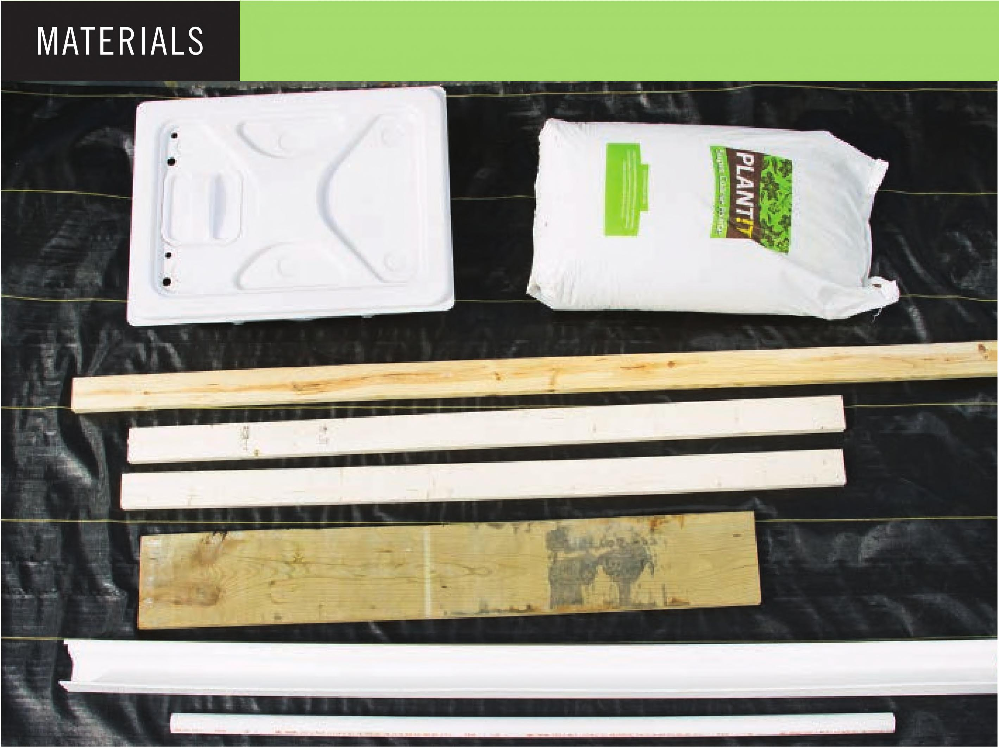

HOW TO BUILD A RAIN GUTTER GARDEN This system is one of the more complicated systems in this book, but that is because I was focused on the aesthetics of the final system. I personally like a system that looks so nice that a visitor to my garden would not immediately think it is a DIY project. To simplify the assembly of this system, you can skip the paint job, use vinyl tubing to connect troughs, and reduce the number of levels. Alternatively, this system can be thought of as a model for a much larger system. I cut my channels to 33 inches wide, but this system could easily be modified to have 1 0- inch -wide channels. It could be many levels taller too. When adding more vertical levels, it is important to consider pump size. I prefer to oversize a pump and use shutoff valves to control flow for each level. Oversized pumps also help reduce the potential of debris clogging the irrigation lines. • Suitable Locations: Indoors, outdoors, or greenhouse • Size: Medium to large • Growing Media: Perlite, clay pellets, and other fastdraining materials • Electrical: Required • Crops: Leafy greens, herbs, strawberries, and other short crops Frame 1 2 x 1 0" x 8' board 2 2 x 4" x 8' board 11b. #1 0 x 2Vi" exterior screws 20 gal. Reservoir Troughs 1 1 0' vinyl rain gutter 6 White vinyl gutter hanger 3 White vinyl K-style end cap set 50 L Coarse perlite Irrigation 3 V2" rubber grommet 3 Vi elbow connectors 10' V2" black vinyl tubing 6' IV2" PVC pipe 3 1 V2" PVC coupling 4' V4" black vinyl tubing 1 V2" stopper 3 W double-barbed connectors 3 W shutoff valve 1 Submersible water pump (800 GPH) 3 Active Aqua screen fitting Optional 3 cans White water-based latex primer, sealer & stainblocker (KILZ 2 LATEX) Paint roller and/or paint brush (paint frame before assembly) 120 DIY HYDROPONIC GARDENS
